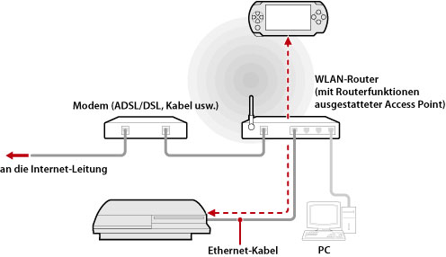
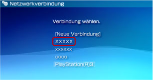

Netzwerk > Verwenden von Remote Play (über einen Access Point)
Verwenden von Remote Play (über einen Access Point)
Schließen Sie das PS3™-System über ein Netzwerkkabel an einen Access Point an und stellen Sie mithilfe der WLAN-Funktion des PSP™-Systems über den Access Point eine Verbindung zum PS3™-System her.
Beispiel für eine gängige Konfiguration

Anmerkungen
- Ein WLAN-Router ist ein Router mit Access Point-Funktionen. Ein Access Point ist ein Gerät, das die drahtlose Verbindung zu einem Netzwerk ermöglicht. Einen Router benötigen Sie, wenn mehrere Geräte eine Internetverbindung nutzen sollen.
- Modems können über Routerfunktionen verfügen. Schließen Sie das PS3™-System an ein Gerät mit Routerfunktionen an.
- Wenn der Access Point und das Modem mit Routerfunktionen ausgestattet sind, schalten Sie die Routerfunktionen an einem dieser Geräte aus. Das PS3™- und das PSP™-System müssen mit demselben Netzwerk verbunden sein. Wenn zwei oder mehr Router gleichzeitig verwendet werden, sind das PS3™- und das PSP™-System möglicherweise mit verschiedenen Netzwerken verbunden und Sie können Remote Play nicht verwenden.
Vorbereitungen (PS3™- und PSP™-System)
Wenn Sie Remote Play zum ersten Mal verwenden, müssen Sie das PSP™-System beim PS3™-System registrieren (Pairing). Registrieren Sie das System über  (Einstellungen) >
(Einstellungen) >  (Remote-Play-Einstellungen) > [Gerät registrieren].
(Remote-Play-Einstellungen) > [Gerät registrieren].
Vorbereitungen (PSP™-System)
Erstellen Sie eine Netzwerkverbindung für die Verbindung des PSP™-Systems mit einem Access Point. Wenn für das PSP™-System bereits eine Netzwerkverbindung gespeichert wurde, mit der über einen Access Point eine Verbindung zu einem Netzwerk hergestellt wird, brauchen Sie keine neue Netzwerkverbindung zu erstellen. Einzelheiten zum Erstellen einer Netzwerkverbindung finden Sie im Benutzerhandbuch zum PSP™-System.
Verwenden von Remote Play
1. |
Wählen Sie am PS3™-System |
|---|---|
2. |
Wählen Sie am PSP™-System |
3. |
Wählen Sie [Verbindung über privates Netzwerk]. |
4. |
Wählen Sie aus der Verbindungsliste die Verbindung für den Access-Point für Remote Play.  Wenn die Verbindung erfolgreich zustande kam, wird der Bildschirm vom PS3™-System auf dem PSP™-System angezeigt. |
 (Netzwerk) >
(Netzwerk) >  (Remote Play).
(Remote Play). (Remote Play).
(Remote Play).Anmerkungen
- Remote Play kann innerhalb der Reichweite des Signals vom Access Point verwendet werden.
- Wenn am PS3™-System die Einstellung für Remote Start aktiviert ist, können Sie das System automatisch einschalten lassen (Wake on LAN). In diesem Fall brauchen Sie Schritt 1 oben nicht auszuführen. Einzelheiten dazu finden Sie unter (Einstellungen) > (Remote-Play-Einstellungen) > [Remote Start] in diesem Handbuch.
Beenden von Remote Play
Drücken Sie die PS-Taste (HOME-Taste) am PSP™-System und wählen Sie [Remote-Play verlassen] > [Beenden und das PS3™-System ausschalten].
Anmerkung
Wählen Sie [Beenden ohne Ausschalten des PS3™-Systems], wenn am PS3™-System gerade Vorgänge wie das Kopieren von Dateien oder das Herunterladen im Hintergrund oder andere Funktionen ausgeführt werden, für die das System eingeschaltet bleiben muss.